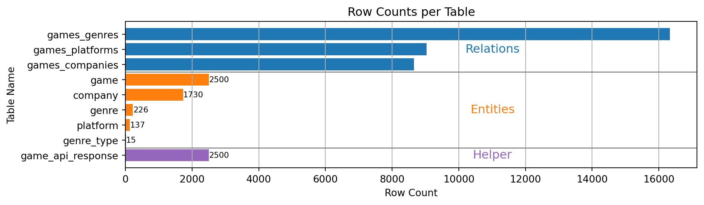

![]()

Project Abstract for Linked Open Data
17/12/2024
Goal
- Focus on data on video games
- Visualise video games and related data
- Companies
- Genres
- Platforms
- Enable querying of this data
Steps
Step 1: Acquiring the Data (DONE)
- MobyGames is our data source
- They provide exports and an API
- Download of the top 2,500 games by MobyGames rating
- Get data on games, genres and genre types from
API - Extract data on companies from
HTML
Step 2: Saving the Data for Further Use (DONE)
- Principle: Save all data in an SQL DB (Neon) first
- API limitation: Save API responses as
jsonband do processing later - Largely normalised tables
Step 3: Moving from RDBMS to Graph DB (DONE)
- Data is now moved from the relational database to a graph DB
- The free tier of
Neo4jis used for this purpose - The basic tables get transformed into nodes with their attributes
- The foreign keys from the RDBMS get transformed to relationships
Step 4: Writing the Data into a Neo4j DB (DONE)
# Tables from the Relational Database [Table, [Columns], Label]
TABLES = [
("company", ["company_id", "company_name"], "Company"),
("game", ["game_id", "title", "score", "release_date"], "Game"),
("genre", ["genre_id", "name"], "Genre"),
("genre_type", ["genre_type_id", "name"], "GenreType"),
("platform", ["platform_id", "name"], "Platform")
]
# Relationship tables from the Relational Database [Table, [Columns], Table1, Table2, Column, RelationshipType]
RELATIONSHIP_TABLES = [
("games_companies", ["game_id", "company_id", "type"], "Game", "Company", "identifier", None),
("games_genres", ["game_id", "genre_id"], "Game", "Genre", "identifier", "HAS_GENRE"),
("games_platforms", ["game_id", "platform_id"], "Game", "Platform", "identifier", "AVAILABLE_ON"),
]
[...]
def transfer_data():
with neo4j_driver.session() as session:
data_list = [] # List to store the data to create nodes
# Create nodes based on the tables
for row in TABLES:
table_name, columns, label = row
data = fetch_data_from_neon(table_name, columns)
for row in data:
data = dict(zip(columns, row))
schema_data = map_nodes_to_schema_org(label, data)
data_list.append(schema_data)
session.execute_write(create_batch_nodes, label, data_list)
data_list = []
# TODO: This part is exceptionally slow; still unclear why
for row in RELATIONSHIP_TABLES:
table_name, columns, table1, table2, column, type = row
data = fetch_data_from_neon(table_name, columns)
for row in data:
data = dict(zip(columns, row))
relationship_type = type if type else data[columns[2]]
session.execute_write(
create_relationship,
table1, (column, data[columns[0]]),
table2, (column, data[columns[1]]),
relationship_type
)
# TODO: Refactor this to be more dynamic, currently hardcoded since its the only relation that is one-to-many
genres = fetch_data_from_neon("genre", ["genre_id", "genre_type_id"])
for genre in genres:
session.execute_write(
create_relationship, "Genre", ("identifier", genre[0]), "identifier", ("genre_type_id", genre[1]), "IS_TYPE"
)Step 5: Including Schema.org (Until End of Week)
- Like shown in this example here
- Company → https://schema.org/Organization
- Game → https://schema.org/VideoGame
- Platform → https://schema.org/GamePlatform
- Genre → TODO: Find or create own Schema
- GenreType → TODO: Find or create own Schema
Step 6: Possible Further Steps (Until End of Year)
- Connect our data with publicly available knowledge bases
- DBpedia, Wikidata, …
- Expand our data using publicly available unstructured data
- Co-Occurrence, Clustering, Pattern Matching, …
- Creating an API endpoint on our data for retrieving data
- Problem: N10s not in Aura DB available
- Either: Query DB and serialize to JSON-LD manually
- Or: Install Neo4j (+ n10s) on a server
Ole Berg & Lennard Feuerbach